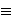

[Prethodna tema]
[Sljedeæa tema]
5. Eliptièke
krivulje nad konaènim poljima
5.1. Konaèna polja
Kod primjena u kriptografiji, eliptièke krivulje se
promatraju nad konaènim poljima. Podsjetimo se osnovnih
svojstava konaènih polja.
Konaèno polje s q elemenata oznaèava se s

 .
Neka je p karakteristika polja
.
Tada
sadrži prosto polje
.
Neka je p karakteristika polja
.
Tada
sadrži prosto polje
 =
=
 ,
i stoga je
vektorski prostor nad
.
Dimenziju od
kao vektorskog prostora nad
oznaèimo s k. Tada
ima pk elemenata, tj.
q = pk.
Nadalje, za svaku potenciju prostog broja
q = pk
postoji jedinstveno (do na izomorfizam) polje s q elemenata.
Jedna od realizacija tog polja je
[x] /
(f(x)), gdje je f(x) neki ireducubilni
polinom stupnja k nad .
Elementi ovog polja su polinomi nad
stupnja manjeg ili jednakog k - 1 (oèito je da takvih polinoma
ima toèno pk), dok su operacije
zbrajanje i množenje polinoma u
[x],
s time da se nakon množenja raèuna ostatak pri
djeljenju s polinomom f(x).
,
i stoga je
vektorski prostor nad
.
Dimenziju od
kao vektorskog prostora nad
oznaèimo s k. Tada
ima pk elemenata, tj.
q = pk.
Nadalje, za svaku potenciju prostog broja
q = pk
postoji jedinstveno (do na izomorfizam) polje s q elemenata.
Jedna od realizacija tog polja je
[x] /
(f(x)), gdje je f(x) neki ireducubilni
polinom stupnja k nad .
Elementi ovog polja su polinomi nad
stupnja manjeg ili jednakog k - 1 (oèito je da takvih polinoma
ima toèno pk), dok su operacije
zbrajanje i množenje polinoma u
[x],
s time da se nakon množenja raèuna ostatak pri
djeljenju s polinomom f(x).
Primjer: Konstrukcija polja
9.
Polinom f(x) =
x2 + 1 je ireducibilan nad
3
jer nema korijena u 3.
Stoga
9
možemo reprezentirati kao
3[x] /
(f(x)). Dakle, elementi od
9 su
0, 1, 2, x, x + 1, x + 2, 2x,
2x + 1, 2x + 2. Izraèunajmo, na primjer,
(x + 1)2 u polju 9.
Imamo: (x + 1)2 = x2 +
2x + 1 = 2x.
Oznaèimo s *
multiplikativnu grupu polja
.
Tada je grupa *
ciklièka, što znaèi da postoji element g
 takav da se svaki element iz
*
može dobiti kao neka potencija od g.
takav da se svaki element iz
*
može dobiti kao neka potencija od g.
Za primjene u kriptografiji, posebno za primjene eliptièkih krivulja
u kriptografiji, najvažniji su sluèajevi kad je q =
p prost broj, te kad je q = 2m
potencija broja 2. Kako smo veæ rekli, polje
2 jest vektorski
prostor nad
2
dimenzije m. Postoji mnogo razlièitih baza tog vektorskog
prostora. Mi æemo spomeniti dva tipa takvih baza:
trinomijalne baze i normalne baze.
Ako je f(x) ireducibilni polinom stupnja m
nad 2,
tada se polje
2
može reprezentirati kao skup svih polinoma nad
2
stupnja manjeg
od m, s operacijama modulo f(x).
To se zove reprezentacija pomoæu polinomijalne
baze. Reprezentacija pomoæu trinomijalne baze je
specijalni sluèaj reprezentacije pomoæu polinomijalne baze u
kojem polinom f(x) ima oblik f(x) =
xm + xk + 1.
Prednost takve reprezentacije jest efikasnost provoðenja
redukcije modulo f(x). Za neke m-ove (npr. za
m  0
(mod 8)), trinomijalna baza ne postoji. Eksperimentalno je pokazano
da trinomijalna baza postoji za nešto više od pola m-ova
manjih od 1000.
Normalna baza od
2
nad 2
je baza oblika
{b, b2,
b2 ,
... , b2
,
... , b2 },
},
gdje je b
2. Takva baza uvijek
postoji. U reprezentaciji pomoæu normalne baze, kvadriranje
u polju postaje trivijalno: ako je a =
(a0, a1, ... ,
am -1), onda je a2 =
(am -1, a0,
a1, ... , am -2).
Dakle, kvadriranje nije ništa drugo nego ciklièki pomak udesno.
Meðutim, za opæenitu normalnu bazu, množenje u polju je znatno
kompliciranije. Stoga su od interesa one normalne baze kod kojih
je množenje što jednostavnije. Takve baze se nazivaju
optimalne normalne baze (ONB). Optimalna normalna baza
ne mora postojati. Jedan od nužnih uvjeta za postojanje ONB je
da je barem jedan od brojeva n + 1, 2n + 1 prost.
Zadatci:
- Dokažite da je polinom f(x) =
x3 + x + 1 ireducibilan nad
2.
Napravite tablice zbrajanja i množenja za 8 elemenata polja
8
reprezentiranog kao
2[x] /
(f(x)).
- Neka je f(x) = xm +
xk + 1, te neka je
a(x) =
a0 + a1x + a2x2 + ... +
a2m -2x2m -2
2[x].
Uvjerite se da sljedeæi algoritam raèuna ostatak pri
dijeljenju polinoma a(x) s polinomom f(x):
For i = 2m - 2
to m
by -1 do
ai - m = ai - m +
ai
ai - m + k =
ai - m + k + ai.
[Prethodna tema]
[Sljedeæa tema]